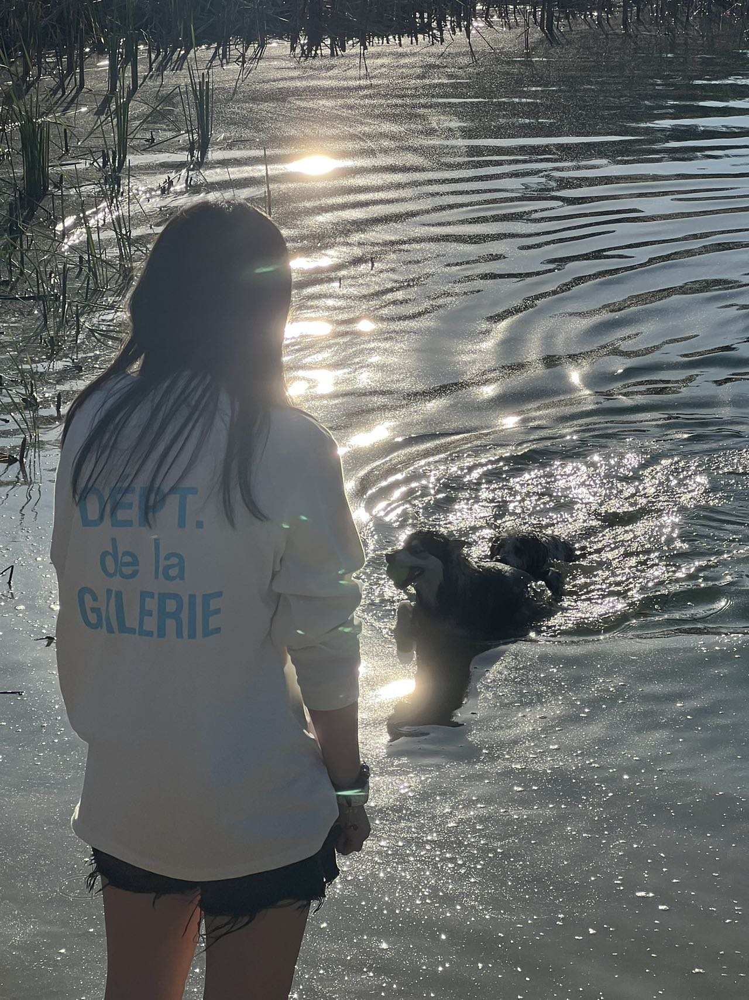

Weekly F

After these two weeks of study, we have learned more skills in building websites. And we shared our ideas and creativity for building our own website. This is very inspiring to me. I found that everyone has a relatively common idea. That is to add style when scrolling down the page. I find it very interesting. I plan to use techniques like this on my website as well. I found that many people have a lot of colors in their ideas. I still plan to make my website simple. Because I personally love minimalism. Clean, tidy, beautiful and more efficient.
This is the first week since we returned from autumn break, and it is a bit painful to adjust from the vacation state back to the state of study. During this fall break, eight of us rented a villa two hours outside of Columbus. We had a great three days. During those few days, we cooked barbecue together, ate hot pot, kayaked, played switch, sat by the campfire, chatted, and watched the stars together. Speaking of stargazing, there are really many stars that can be seen in the suburbs. I really miss the holiday life that just passed. But then there's Thanksgiving and Christmas. Already looking forward to future vacations.